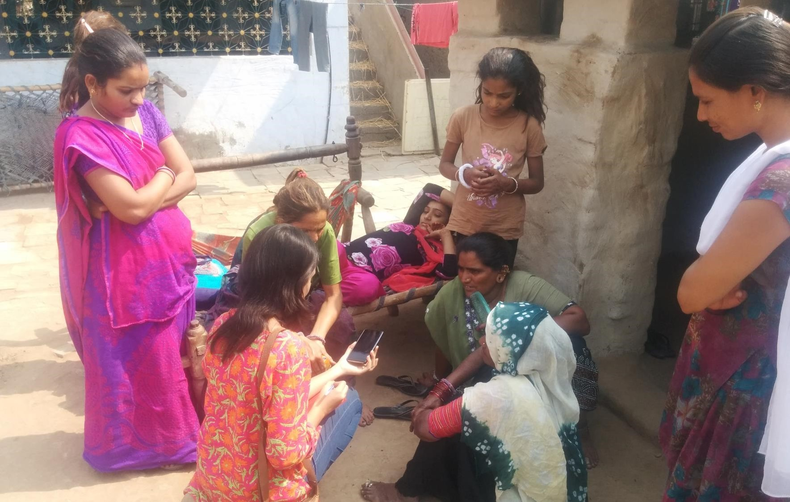
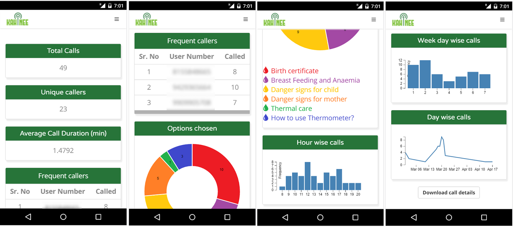

Work

Nov'15 - May'16

Kahinee - An IVR system for rural health awareness
-

Kahinee helps rural audience over a simple telephone call
-

Kahinee is an outcome of following design thinking cycle
-

Glimpse of field study
-

Glimpse of field study
-

Dashboard for NGOs
Kahinee is an IVR/VAS system intended to impart education and awareness in rural areas about maternal and child care, nutrition, anaemia and government health policies as well as facilities. We analyzed and discovered in our field visits to a number of villages that while there is an increasing awareness about different healthcare facilities and a desire to learn, there are few means of access to this information for the common rural area resident. Adding to that, illiteracy is still majorly prevalent because of which learning about health issues from the print medium is not a viable option.
We decided to provide a toll free number to rural residents using which they can learn as well as solve their queries pertaining to different health issues in their local language via audio notes and short audio plays. Kahinee aimed to impart healthcare education to ASHA workers, PHCs’ doctors (Primary Healthcare Centre), nurses and rural patients. ASHA workers are selected from the rural citizens and their goals are to help residents understand health issues as well as give them the medicines recommended by the doctors at the PHC. Our system used creatively designed audio plays and scripts to be able to train them about varied health issues.
The phase one implementation of this system consisted of educating and spreading awareness through short engaging audio plays and stories. The phase two of this system was to consist of a service using which people in rural areas can leave an audio note describing their symptoms in their local language. Kahinee will send these audio notes to urban doctors. The phase one pilot test has been successfully implemented in the Jhagdia district of Bharuch with Harvard based NGO - Barakat Bundle, SEWA Rural and Indian Institute of Public Health.
Welcome message in local language:
Audio play in local language:
Weblink: kahinee.in

Simulation of JPEG Image compression
-

Test image for the simulation
-
Compressed image with Quality factor 5
-
Compressed image with Quality factor 35
-
Compressed image with Quality factor 95
-

Q-factor vs. the ration of input and output size
A compression model takes the raw input data and represents it in such a form that the space required to store the modified data is less than the original data. Several compression models have been devised to optimally use resources like bandwidth and storage space. This project presented simulation of one such technique called JPEG compression model. It exploits the fact that human eye is less sensitive to high frequency variation and color variation in an image. Hence, we obtain a compressed image by removing such information. The quality of the compressed image can be varied by changing the Q-factor. Several techniques like DCT, iDCT, quantization, zigzag traversal, run length encoding and decoding were implemented to simulate the model. DCT separates the spatial image data into frequency map. Quantization helps in removing appropriate information which is insignificant for human eye. Also, using two different quantization matrix helps in exploiting eye’s sensitivity for chrominance and luminance. Zigzag traversal and run length encoding helps in storing the quantized information in a compact form. Thus reducing the size of the compressed image as compared to input image.
Results obtained as a part of this simulation help us to conclude that the compressed image contained same perceived information as the input image for Q-factor above a certain threshold. Compression ratio of approximately 5:1 (Input image size : Output image size) is obtained for such Q-factor which highlights the efficiently of this model. This results will vary for different input image as it might have different frequency spectrum and color variation. Also, to compress the image further, Huffman coding can be applied to the final compression output obtained after run length encoding. Huffman coding is not implemented as it was beyond the scope of this project.

The project was aimed towards developing a spell checker similar to the one used in word processing softwares. I used cocepts of TRIE data strucuture, file management and programming languages to develop this software.